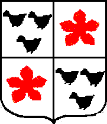

retour à la famille Caumont

DOCUMENTS DIVERS NON PUBLIÉS (3/3)
AVEUX
Référence : AD76 - 2B 407 - vol. 171 -
pièce 115
Provenance : Laurent Rousselle
Aveu de Charles de Matignon pour la baronnie de St-Lô, 7 mai 1605 :
fol. 482 Du Roy nostre sire en sa vraie subjection [sujétion] et obéissance à cause de son duché de Normandye, nous Charles, seigneur de Matignon, compte [comte] de Thorigny, baron de Sainct Lô, chevallier des ordres du Roy, coner [conseiller] en ses conseilz d'estat et privé, cappitaine de cent hommes d'armes de ses ordonnances et lieutenant général pour sa majesté aux bailliages de Costentin et Allençon, confessons et advouons tenir neuement et sans moien [nuement et sans moyen] par hommage et feauté, la baronnie de Sainct Lô à nous escheue par le decedz de feu Monsieur de Matignon vivant mareschal de France nostre père, tant en chef de la dicte baronnye que menbres d'icelle ...
Item Jean de Caumont escuyer tient de nous par foy et par hommage ung fief de haubert entier nommé le fief de Gourfalleur tenu noblement à court et usaige et simple gaige plege dont le chef est assis en la parroisse de Gourfalleur et nous en doibt vingt quatre solz tournois pour aide d'ost touttefois que le Roy nostre dict seigneur prend son service d'ost en temps de guerre. D'estre quarante jours à ses despens à garder l'huys [l'huis] de nostre dicte chambre ou chastel de Sainct Lô et plusieurs autres rentes, faisances, redevances et obéissances telles comme nous et nos ditz prédicesseurs y avons à prendre d'ancienneté et comme deubz nous en sont à présent et nous en apartient aides, gardes, relliefz, traiziemes et autres aventures toutteffois que les cas s'offrent
Référence : Archives Départementales de
la Seine Maritime, Cour des Aides (1440-1790), Sous-série 3 B,
Répertoire numérique établi par Marie-Christiane
de la CONTE, Rouen, 2006
Provenance :
http://www.archivesdepartementales76.net/instruments_recherche/ir.php
3 B 1158 Saint-Lô (1452, copie, 1663) "Lettres du 22 décembre 1452 : Jean de Caumond, escuyer, monnoyer, est déclaré exempt d'aller à la guerre par Mr le Conestable de France et ses lieutenants, à cause de son privillège de monnoyer".
Référence : Chartrier de Thère 262J
Provenance
: Archives
Départementales de la Manche
262J44 :
Succession de Rachel de Saint Simon, mère de Jean, Philippe et
Jacques de Thère, procédure entre Jean de Caumont leur tuteur,
et Nicolas Grimoult remarié avec Marie Le Goix :
réglement des droits des enfants issus des 2 mariages de la
défunte [1613-1629]
NOTES GÉNÉALOGIQUES DE PIERRE LEPESANT
Référence : 1 Mi 90 Notes
généalogiques de Pierre Lepesant sur des familles nobles
et bourgeoises du Coutançais ; Caen AD Calvados F5103-5115
Provenance : Archives Départementales de
la Manche
Noble damoiselle Judith de CAUMONT fille héritière en sa partie du
seigneur et patron de Gourfaleur, mariée à Ver en 1631
(registre de Cérences) avec Jean PIGNARD, sieur du Hautbosq,
avocat, veuf de ??, décédé en 1682 à
Cérences.
Philippe de CAUMONT, écuyer, sieur de la Pendrie (Gourfaleur)
marié à Courcy en 1640 avec Damoiselle Diane GOUESLARD
fille d'Antoine, écuyer, sieur de la Carbonnière.
Référence : 1E/331 Graignes : pleds et
gage-plèges (1653-1659), procédure seigneuriale (1627).
Provenance
: Archives
Départementales du Calvados, via Alain Aubril
Le fief Mathieu
Groult
dam[ois]elle Gabrielle Legalland v[euv]e de Guill[aume]
de caumont escuier seulle tenant par
Jean de Caumont esc[uyer] son fils pour
Jean de Caumond son fils escuier ? Laisnesse
Le fief Mathieu
Onffroy
Lad v[euv]e seulle tenante
Fief Mace Alexandre
Jean de Caumont escuier
Me Nicolas Biree pbre